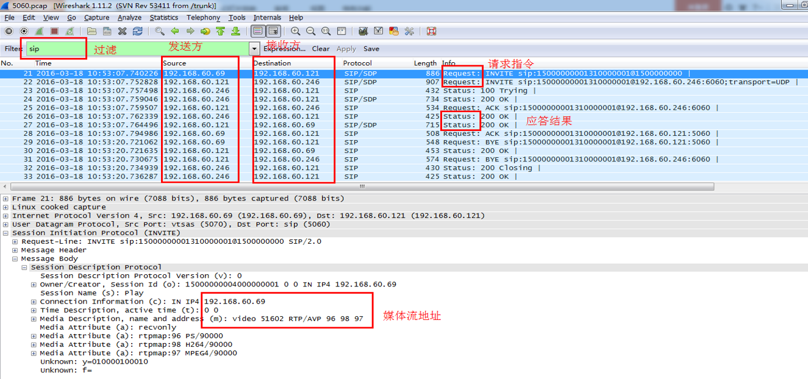
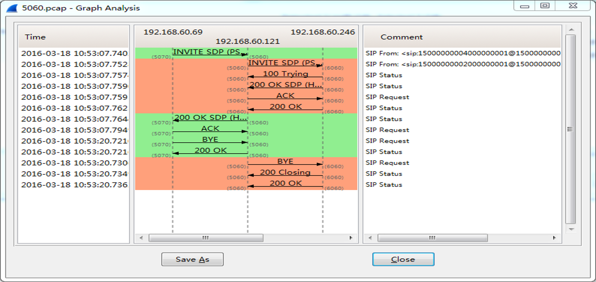
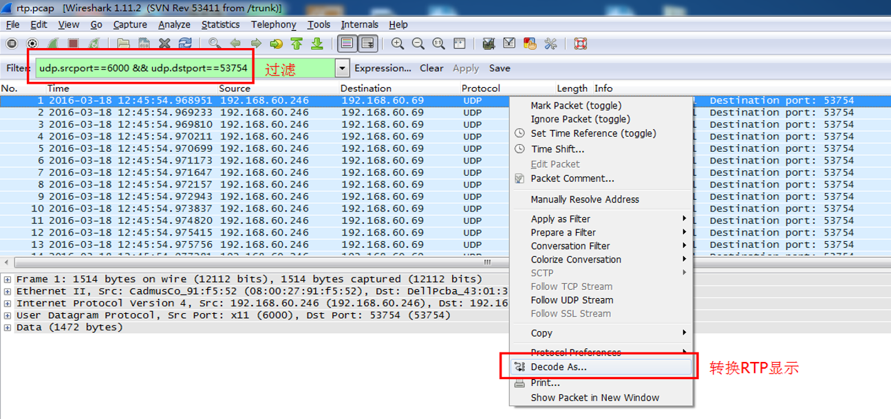
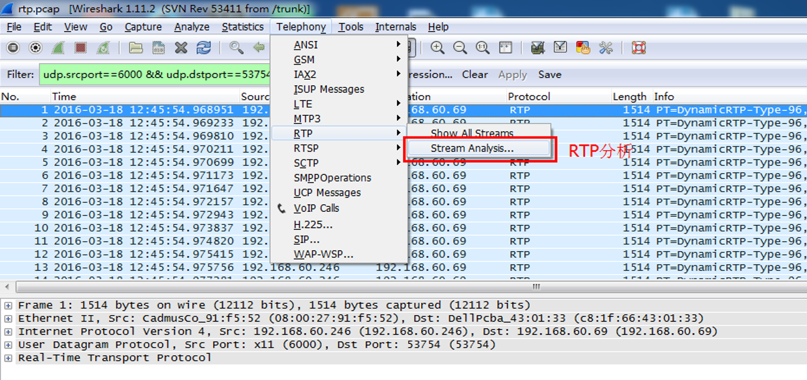
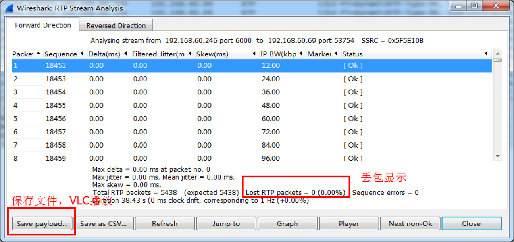

国标网关FAQ
一，配置
1，国标网关注意哪些配置？
- 做上级时候不需要配置媒体服务，除非需要流中转
- 配置sipclient用户时候，不开启心跳检测
2，国标媒体注意哪些配置？
- SIPMedia.xml配置文件里的
media_recv_ip和media_send_ip为媒体服务器的ip
- 默认情况下，流复用开启，强制转码关闭，脱壳开启，rtcp都关闭
3，sipclient注意哪些配置？
- SipServer.ini配置文件里的
ip和severPort
4，国标组件gbhost注意哪些配置？
- GBHostCfg.ini配置文件里
ServerID和LocalIP，多网卡时需要指定LocalIP
- 有FS时，每个国标组件里都要单独配置用户名和密码，用户名不能重复使用
二，网力国标平台做下级
1，tvs已经接入前端摄像机，现在需要网力国标平台做下级，将tvs的视频共享给上级国标平台，如何配置？
- 配置国标媒体、tvs，在通道配置界面查看到tvs通道
- 配置用户，使用sipclient测试打开视频
- 配置上级，向上级注册
2，tvs里实时点播正常，sipclient实时点播开流失败
- sipclient心跳会超时，修改用户配置里取消心跳检测
3，tvs里实时点播正常，sipclient实时点播白屏没有图像
- 国标媒体的配置文件ip不对
- sipclient的配置文件ip不对
- 国标媒体和sipclient机器之间不能互通
4，上级国标平台显示的网力国标平的通道列表混乱
- 如果上级要求行政区划分组，在PM里名称都要使用行政区划的编码配置，或者使用国标转换工具批量修改国标网关的通道编号
5，sipclient实时点播视频正常，上级国标平台看不到视频
6，对接上级国标平台需要过网闸，怎么配置？
三，网力国标平台做上级
1，网力国标平台做上级，现在需要接入下级国标平台，并且要在tvs里看到下级国标平台的视频，如何配置？
- 配置国标下级，下级注册成功后获取下级通道
- 配置用户，使用sipclient测试打开视频
- 配置用户，然后配置国标组件和PM
2，在web通道查看里看不到国标下级平台的摄像机通道
- 没有向下级发送查询目录通道
- 按列表查看或者查看数据库里没有数据
- 如果有数据但是页面展示不出来，那么数据里通道、行政区划和父设备的国标编号不对
3，在sipclient里看不到摄像机通道列表
- 共享推送节点编号设置不对
- 改用UDP传输，修改国标网关发送消息数目为1
4，sipclient实时点播国标下级摄像机通道开流失败
- 下级不在线
- 如果开启流中转，国标媒体没有配置和启动
- 抓包分析查看下级是没有返回200 OK或者200 OK内容不正确
5，sipclient实时点播国标下级摄像机通道白屏没有图像
- sipclient的配置文件ip不对
- 没有流中转时候，下级直接发流到sipclient机器，sipclient机器和下级不能互通
6，sipclient实时点播国标下级摄像机通道能看到图像，但是在PE3和tvs demo开流失败
7，sipclient实时点播国标下级摄像机通道能看到图像，但是在PE3和tvs demo里黑屏没有流
- 国标组件的配置ip不对
- 国标组件配置的用户被别的国标客户端或国标组件同时使用
8，网力国标平台已经接入了国标下级平台的视频，现在需要共享给上级国标平台，如何配置？
- 直接配置添加上级
- 如果上级跟下级不能互通，那么开启流中转
9，点播视频出现花屏
四，抓包
1，什么情况下需要抓包？
2，在哪台机器上抓包？
- 开流失败在国标网关上抓包
- 没有图像在客户端上抓包（sipclient或者国标组件的tvs）
3，如何抓信令包？
- linux:
tcpdump -s 0 -i any port 5060 -w 5060.pcap
- windows:
wireshark
4，如何抓媒体包？
- linux:
tcpdump -s 0 -i any -w all.pcap
- windows:
wireshark
5，怎么分析抓包的内容？




